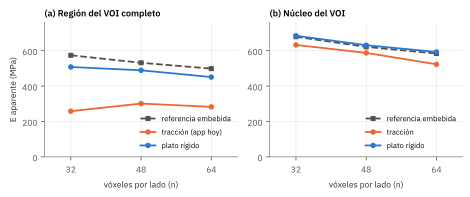
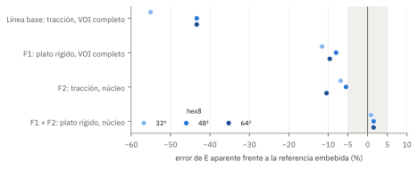
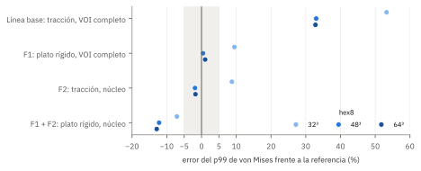
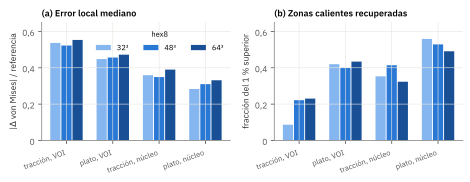
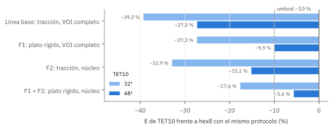
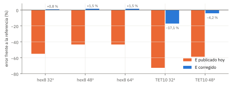

El informe de artefactos identificó tres problemas graves en el ensayo de compresión: el techo cargado con tracción uniforme (A1), las caras laterales cortadas por el recorte del VOI (A2) y la dependencia de la rigidez respecto del tipo de malla (A3). Se acordó corregirlos en un espacio temporal, una rama local que no se sube, y llevar a GitHub solo lo que mejorase la aplicación de forma clara.
Para decidirlo sin depender de la opinión, se construyó una referencia sin artefactos de borde (el mismo espinodoide rodeado de 1,25 mm de su propio hueso) y se fijó por escrito, antes de medir, la regla que separa una mejora clara de una leve, nula o perjudicial.
Las dos correcciones de borde superan con holgura el criterio fijado de antemano y se integran en la aplicación. Juntas llevan el error de la rigidez aparente del −43 a −55 % al +0,8 a +1,5 %. La malla suave no necesita cambios: con el protocolo corregido, su brecha con los ladrillos baja al 5,6 % a 48³.
| Código | Corrección | Corrige | Resultado medido | Decisión |
|---|---|---|---|---|
| F1 | Plato rígido lineal en el techo (análisis lineal_plato) | A1 | Error de E: −55/−43/−43 % → −12/−8/−10 %; p99: +53/+33/+33 % → +10/+0,5/+1 % | Aceptada |
| F2 | E y p99 medidos en el núcleo, a 0,625 mm de las caras | A2 (y A1) | Error de E → −7/−6/−10 %; p99 → +9/−2/−2 % | Aceptada |
| F1+F2 | Plato rígido y núcleo a la vez (E corregido) | A1, A2 | Error de E → +0,8/+1,5/+1,5 % | Aceptada |
| A3·P | Mismo protocolo corregido para la malla suave | A3 | Brecha TET10/hex8 a 48³: −27 % → −5,6 % (umbral 10 %) | Resuelto |
| A3·M | Cambiar el suavizado o el decimado de la malla suave | A3 | Ningún candidato mejora: uno no genera malla válida y el otro es más blando | Descartada |
Los tres valores de cada celda corresponden a 32³, 48³ y 64³ con hexaedros.
La aplicación subestimaba la rigidez del hueso a la mitad y sobrestimaba la tensión citada en un tercio por dos decisiones de modelado del ensayo, no por los motores. Desde esta versión calcula en paralelo un E corregido (plato rígido y medida en el núcleo) y un p99 corregido (plato rígido sobre el VOI completo), y los muestra junto a los valores de siempre. Lo que queda pendiente es otro problema: la tensión local de la malla suave sigue un 25 % por encima de la de los ladrillos (artefacto A4), y el mapa elemento a elemento conserva un error mediano del 28 al 33 % incluso con las correcciones.
Una corrección solo puede juzgarse frente a un valor que no tenga el defecto que se corrige. Los artefactos A1 y A2 nacen de los bordes artificiales del VOI: el techo donde se aplica la carga y las cuatro caras que cortan trabéculas. Si el mismo hueso se ensaya rodeado de más hueso, la región del VOI no tiene ninguno de esos bordes. Esa es la configuración embebida, la estrategia que se ha usado para atenuar la influencia de las condiciones de contorno en volúmenes trabeculares1.
El espinodoide se genera como una suma de ondas evaluada en una rejilla. Evaluando el mismo campo en una rejilla mayor (n/4 vóxeles más por cada lado, 1,25 mm) se obtiene un bloque de 7,5 mm cuyo interior es idéntico vóxel a vóxel al VOI de 5 mm, lo que se comprobó en las tres resoluciones. El bloque se ensaya con plato rígido y base deslizante, y todo se mide solo en la región que ocupa el VOI.
PRERREGISTRO.md antes de medir.Con cuatro métodos, tres resoluciones y dos magnitudes, siempre es posible encontrar una combinación que parezca mejorar. Fijar antes de medir qué se mide, frente a qué y con qué umbral evita elegir el criterio a la vista de los resultados. El prerregistro se enmendó una vez, también antes de cualquier medida: el extensómetro por nodos en un plano se sustituyó por uno de franjas, porque el primero no existe en las mallas de tetraedros.
Se usó el espinodoide de referencia de la comparativa de motores (densidad relativa 0,30, número de onda 12π, 700 ondas, semilla 1, VOI de 5 mm) con E = 20 GPa y ν = 0,3, resuelto con NGSolve. La Tabla 1 resume los ensayos. Como control, los valores TET10 de la línea base reprodujeron los de la comparativa de motores (E aparente 156,7 y 219,0 MPa), y la referencia resultó estable: con tracción en lugar de plato sobre el bloque, su E en la región del VOI cambió un −1,7 % (522,3 frente a 531,5 MPa a 48³).
| Ensayo | n | Carga | GDL | t (s) | Uso |
|---|---|---|---|---|---|
| Bloque embebido hex8 (7,5 mm) | 48 / 72 / 96 | plato | 213 996 / 589 728 / 1 238 961 | 17 / 91 / 243 | referencia de VOI de 32³, 48³ y 64³ |
| Bloque embebido hex8 | 72 | tracción | 589 728 | ≈ 90 | sensibilidad de la referencia |
| VOI hex8 | 32 / 48 / 64 | tracción y plato | 62 595 / 173 484 / 365 655 | 1 / 4 / 14 | B0, F1, F2 y F1+F2 |
| VOI TET10, malla por omisión | 32 / 48 | tracción y plato | 314 880 / 790 599 | 16 / 60 | A3 con cada protocolo |
| VOI TET10, sin suavizado ni decimado | 32 | tracción y plato | 542 358 | 33 a 35 | candidato de malla para A3 |
| VOI TET10, Taubin 5 sin decimado | 32 | · | · | · | candidato: no generó malla válida |
fem.ensayo integrado | 32 a 64 | tracción y plato | · | 2 a 108 | validación de extremo a extremo |
Tabla 1. Ensayos resueltos. Los bloques a 72³ y 96³ se resolvieron con CG y multigrid algebraico a 10⁻¹⁰ por su tamaño; los demás, con Cholesky o BDDC.
Tensión media de la caja (con sus poros) dividida por la deformación de un extensómetro virtual: diferencia de desplazamiento vertical medio entre dos franjas de 0,25 mm, arriba y abajo de la caja.
Percentil 99 de von Mises en la capa superficial de la caja, ponderado por volumen y dividido por su tensión media. Es el estadístico que cita la aplicación.
Valor del método entre el de la referencia en la misma región, menos uno: −43 % es el 57 % del valor sin bordes.
Con hexaedros, bloque y VOI comparten vóxeles: error mediano de von Mises elemento a elemento y fracción del 1 % más cargado de la referencia que el método recupera.
La Figura 2 muestra los valores absolutos. La línea base (tracción en el techo) queda muy por debajo de la referencia en las tres resoluciones; el plato rígido se acerca, y en el núcleo con plato la curva prácticamente se superpone a la de referencia. Las Figuras 3 y 4 expresan lo mismo como error relativo, para la rigidez y para la tensión citada.



En lugar de repartir la carga como una presión uniforme sobre el hueso del techo, se impone el mismo desplazamiento vertical a todos los nodos del techo, sin fricción. Es lineal y se escala a la tensión del protocolo, de modo que da el E aparente, el p99 y la carga de Pistoia comparables con los de siempre.
Con tracción, las trabéculas cortadas en el techo reciben carga sin nada que las sujete y se hunden como voladizos; el informe de artefactos midió que el efecto alcanza 1,25 a 1,5 mm de profundidad. Es la versión computacional del artefacto de extremos descrito en ensayos de compresión de hueso trabecular2. El plato reparte la deformación, no la fuerza.
El error de E pasó de −55, −43 y −43 % a −12, −8 y −10 % (32³, 48³ y 64³), y el del p99, de +53, +33 y +33 % a +10, +0,5 y +1 %. Las dos condiciones del prerregistro se cumplieron en las tres resoluciones. En el campo local, el error mediano de von Mises bajó de 0,52 a 0,55 hasta 0,45 a 0,47, y la fracción de zonas calientes recuperadas subió de 0,09 a 0,23 hasta 0,40 a 0,43.
Con plato, el E del VOI completo sigue entre un 8 y un 12 % por debajo de la referencia: el plato corrige el techo, pero no las caras laterales (A2), cuyas trabéculas cortadas siguen descargadas.
El criterio de Pistoia con plato da una tensión de fallo mayor que con tracción (4,71 frente a 3,82 MPa a 48³, +23 %). Es coherente con un techo menos deformado, pero la carga de fallo no se midió en la referencia embebida, así que este cambio no está validado y la aplicación lo muestra solo como dato del análisis con plato.
Se resuelve el VOI completo, como siempre, pero el E aparente y el p99 se miden solo en la caja interior situada a 0,625 mm o más de las seis caras (un núcleo de 3,75 mm en un VOI de 5 mm). La deformación se toma con el extensómetro virtual de franjas, como haría un extensómetro en un ensayo físico para evitar los extremos.
Las trabéculas cortadas por las caras laterales quedan descargadas hasta unos 0,6 mm de la cara, del orden de lo descrito en especímenes reales, donde la franja periférica descargada midió entre 0,19 y 0,58 mm3. Fuera de esa franja, el hueso trabaja como lo haría dentro del hueso.
Con tracción, el error de E en el núcleo fue de −7, −6 y −10 %, frente a −55, −43 y −43 % de la línea base, y el del p99, de +9, −2 y −2 %. Se cumplieron las dos condiciones en las tres resoluciones. El núcleo también atenúa A1, porque su franja superior queda por debajo de la zona más alterada del techo, aunque no del todo (el efecto llega a 1,25 mm).
La corrección no cuesta tiempo de cálculo: es un posproceso del ensayo lineal que ya existía. Por eso se aplica siempre, también con el motor de la aplicación, que no resuelve el plato.
El núcleo y las dos franjas del extensómetro virtual, de 0,25 mm cada una.
Combinadas, las dos correcciones dejan el error de E en +0,8, +1,5 y +1,5 %, dentro de la incertidumbre de la propia referencia (±1,7 %). La combinación se acepta por la regla del prerregistro, pero no es la mejor opción para el p99, que con plato y núcleo queda entre un 7 y un 13 % por debajo de la referencia. La aplicación usa por eso cada corrección donde funciona mejor: E corregido con plato y núcleo, y p99 corregido con plato sobre el VOI completo. Si el motor no resuelve el plato, ambos salen del núcleo con tracción.

Sobre la misma máscara y con el ensayo de siempre, la malla suave de tetraedros cuadráticos (TET10) daba un E aparente un 39 % menor que la de ladrillos a 32³ y un 27 % menor a 48³. El informe de artefactos ya señalaba que la brecha se reducía con plato, lo que apuntaba a una interacción con el techo cargado.
Dos vías, según el prerregistro. La primera, aplicar a la malla suave el mismo protocolo corregido. La segunda, cambiar cómo se construye la superficie: el suavizado de Taubin (20 iteraciones por omisión) y el decimado del 50 % pueden estrechar los puntales delgados. Se eligió entre tres mallas a 32³ y se validó a 48³.
Con plato y núcleo, la brecha TET10/hex8 bajó al −17,6 % a 32³ y al −5,6 % a 48³, por debajo del umbral del 10 % fijado de antemano (Figura 6); el E de la malla suave a 48³ quedó a −4,2 % de la referencia embebida. La malla suave a 32³ sigue sin ser fiable, lo que confirma el aviso que la aplicación ya muestra por debajo de 48³.
Ninguna malla alternativa mejoró a la de omisión. Taubin con 5 iteraciones y sin decimado no generó una malla válida (un tetraedro de volumen no positivo al ajustar los nodos a las caras del cubo). Sin suavizado ni decimado, la malla fue más blanda: E en el núcleo con plato 541,0 frente a 563,9 MPa, con un 72 % más de grados de libertad. El cambio de malla se descarta.
E en el núcleo con plato; referencia hex8 embebida: 678,6 MPa.
La rigidez converge, pero el p99 de la malla suave sigue un 25 % por encima del de los ladrillos a 48³, también con plato: es el artefacto A4, que otros autores han observado en hueso humano4.

| Archivo | Cambio |
|---|---|
spinpy/fem.py | Nueva función magnitudes_nucleo (E y p99 del núcleo, con recorte exacto de los tetraedros que corta la caja); nuevo análisis lineal_plato; registro corregido con los valores recomendados y su método; columnas nuevas en las tablas. El análisis no lineal con plato reutiliza el lineal con plato en lugar de repetirlo. |
dialogo_febio.py, visor.py | Casilla «Lineal con plato rígido y medida en el núcleo», marcada por omisión; columnas «Eapp corregido» y «p99 corregido» en la tabla de resultados; el ensayo rápido del visor también la calcula. |
spinpy/informe.py | El informe de publicación añade el E corregido, con su método, junto al de siempre. |
spinpy/tiempos.py, spinpy/idioma_textos.py | Estimación de tiempo con la resolución adicional; tres cadenas nuevas traducidas al inglés. |
tests/test_30_correcciones.py | Bloque 30 de verificación (8 pruebas), y la cuenta de bloques en los README. |
Las pruebas del bloque 30 detectaron dos errores en la primera versión integrada, que el experimento no mostraba porque en él el margen era un número entero de vóxeles. Con un margen que no es múltiplo del vóxel, la caja del núcleo y los elementos seleccionados no coincidían y la tensión media salía inflada (×1,49 en un bloque de prueba); se corrigió ajustando la caja a la rejilla. Con tetraedros, seleccionar por centroide subestimaba la tensión media un 2,3 % en un bloque pequeño; se sustituyó por el volumen exacto de cada tetraedro recortado por la caja.
Repetido con el código integrado (fem.ensayo, el mismo camino que usan la interfaz y la línea de órdenes), el E corregido reprodujo exactamente los valores del experimento con hexaedros y difirió menos de un 0,2 % con tetraedros (Figura 7). La suite de verificación pasa: 231 pruebas correctas, 19 omitidas (motores no instalados) y 3 fallos esperados que ya estaban marcados como tales, ninguno nuevo. El bloque 24 (figura del método) no puede ejecutarse en este contenedor porque el renderizado de VTK falla sin OpenGL, y falla igual con el código original. El diccionario de traducción está completo (885 de 885 cadenas).

| # | Acción | Por qué | Esfuerzo |
|---|---|---|---|
| 1 | Repetir la validación en VOIs reales (H4, porcinos), con su propio bloque embebido cuando la imagen lo permita | Un solo espinodoide sintético | Medio |
| 2 | Validar la carga de fallo de Pistoia con plato frente a la referencia embebida | Cambia un 23 % sin validación | Bajo |
| 3 | Estudiar la tensión local de la malla suave (A4): evaluación en puntos de Gauss, filtrado de frontera | p99 TET10 +25 % | Medio |
| 4 | Ajustar el margen del núcleo al espesor y separación trabecular del VOI | 0,625 mm se fijó para esta estructura | Medio |
| 5 | Revisar el fallo de mallado con Taubin 5 sin decimado | Tetraedro de volumen no positivo | Bajo |
experimento/a1-a3) en un directorio de trabajo separado. Nada de ella se sube sin pasar el criterio.PRERREGISTRO.md).Desde comparativa_motores/correcciones/, en un equipo de 4 núcleos y 15 GB:
python correcciones.py referencia hex8 tet10 (del orden de media hora; el bloque de 96³ es el más pesado)
python correcciones.py tet10_48 omision
python decision.py (aplica la regla del prerregistro)
python validar_app.py (código integrado, unos 3 min)
python figuras_correcciones.py
python -m pytest tests/test_30_correcciones.py
Referencias verificadas en PubMed. Documentos internos: comparativa_motores/INFORME_ARTEFACTOS.pdf (diagnóstico de artefactos) y comparativa_motores/INFORME.md (comparativa de motores).
Diseño del trabajo. Estudio computacional de verificación con comparación frente a una referencia numérica y criterio de decisión prerregistrado; sin sujetos ni datos experimentales, de modo que PRISMA, CONSORT y STROBE no son aplicables. Se usa la guía específica de Erdemir et al. (2012) para estudios de elementos finitos en biomecánica5, la misma que emplean los informes anteriores de spinpy; no consta una versión posterior que la sustituya.
| Ítem | Contenido | Estado | Modificación necesaria |
|---|---|---|---|
| Identificación del modelo | |||
| 1 | Tipo de modelo, propósito y magnitudes de interés | Cumple | Portada y secciones 1 y 2. |
| 2 | Versión del software y del código | Cumple | Portada. |
| Estructura del modelo | |||
| 3 | Geometría y su origen | Parcial | Espinodoide sintético descrito por sus parámetros; en VOIs reales, añadir segmentación y orientación. |
| 4 | Malla: tipo, tamaño, número de elementos | Cumple | Tabla 1. |
| 5 | Propiedades del material | Parcial | E = 20 GPa, ν = 0,3 (protocolo de la app); falta justificar el módulo de tejido con bibliografía. |
| 6 | Condiciones de contorno y cargas | Cumple | Secciones 1 y 2, fichas F1 y F2. |
| 7 | Interacciones y contacto | No aplica | Sin contacto. |
| Estructura de la simulación | |||
| 8 | Resolvedor y tolerancias | Cumple | Tabla 1. |
| 9 | Postproceso y definiciones | Cumple | Sección 2 y glosario. |
| Verificación | |||
| 10 | Verificación del código | Cumple | Bloque 30 (soluciones exactas) y validación de extremo a extremo. |
| 11 | Verificación del cálculo (convergencia) | Parcial | Tres resoluciones hex8 y dos TET10; la referencia no ha convergido en la malla (E −13 % de 32³ a 64³). |
| 12 | Sensibilidad | Cumple | Carga del bloque de referencia; protocolo; tipo de malla. |
| Validación | |||
| 13 | Comparación con datos experimentales | No cumple | Referencia numérica; declarado en Limitaciones. |
| Disponibilidad | |||
| 14 | Modelo, datos y código | Cumple | Scripts, prerregistro y resultados en comparativa_motores/correcciones/. |